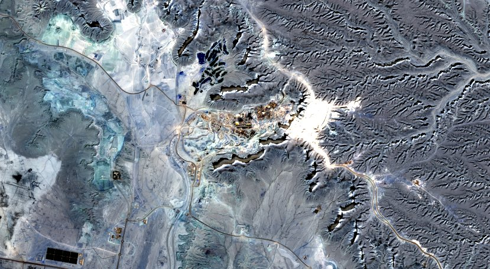
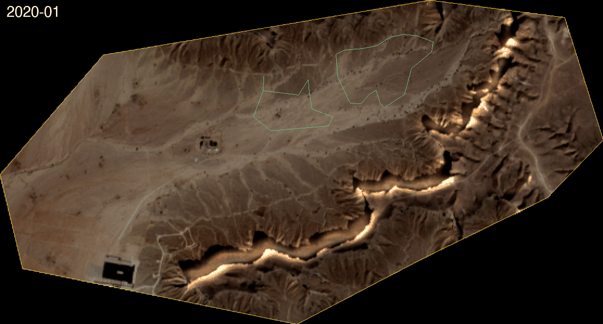
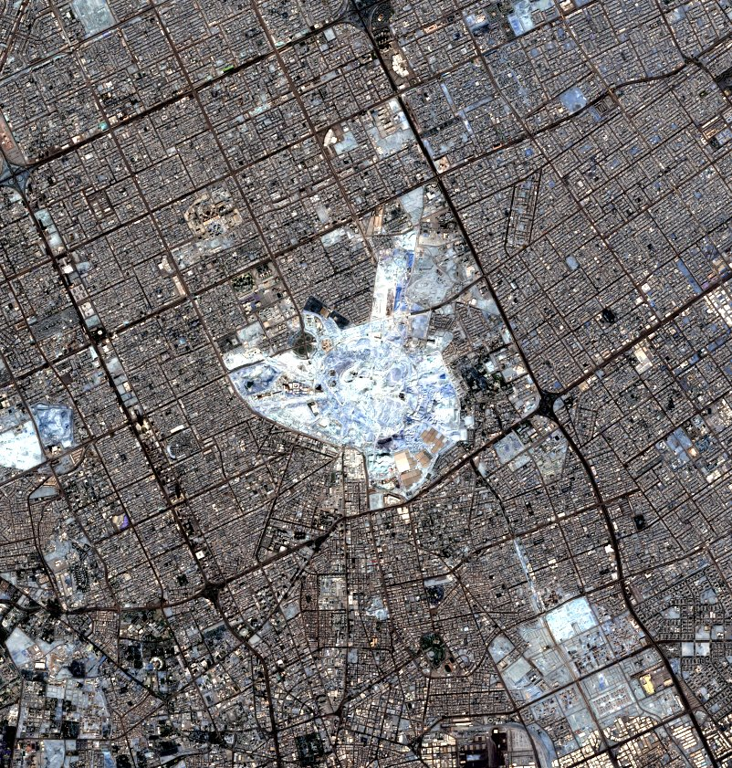
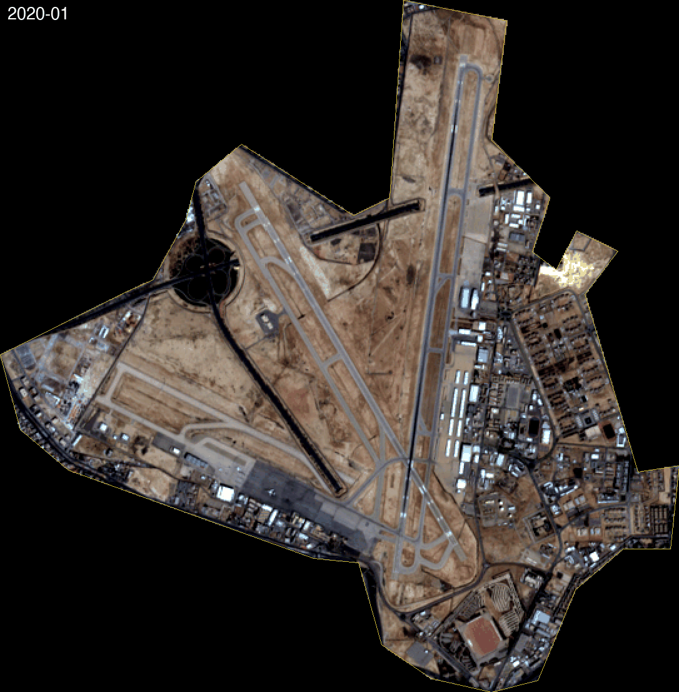
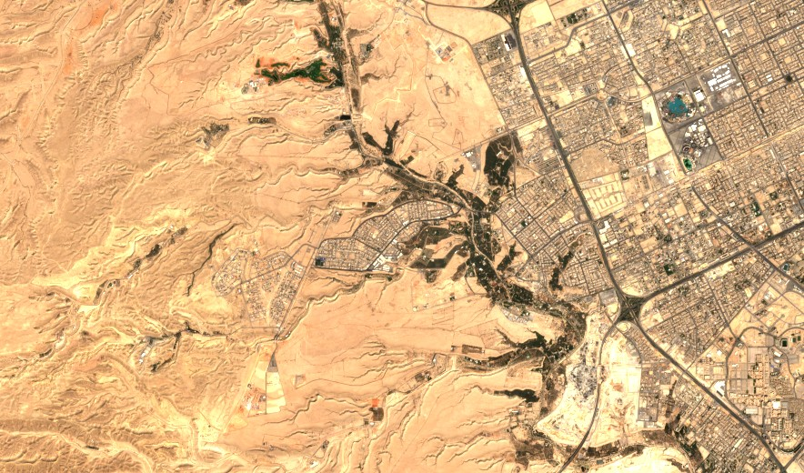
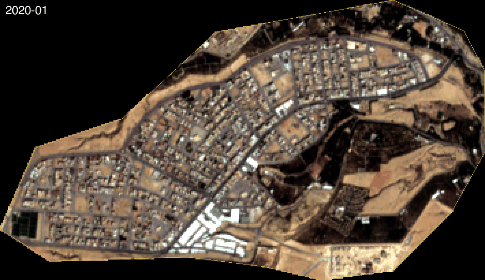

[DRAFT] I'm an electrical engineer. I spent time at KACST on a satellite called SHAMS, learning how these instruments are built.
[DRAFT] This project is the other side of that coin — not the satellite, but what you can see with one. Three Vision 2030 projects, watched from Sentinel-2 every month from 2020 through today.
[DRAFT] Here's what they've shown me.


[DRAFT] Two paragraphs in Ahmed's voice — what changed, what he noticed, what surprised him. Approximately 120 words total. Observational, first-person.
[DRAFT] Placeholder second paragraph. Ahmed writes this while looking at the timelapse. Claude does not invent voice here.
[DRAFT] Caption: built area progression, Qiddiya core AOI, monthly Sentinel-2, 2020–2026.
[DRAFT] Note: March 2022 had persistent dust cover; that month's frame is cloudier than its neighbors. This is why Basira's next step is SAR-optical fusion.


[DRAFT] Two paragraphs in Ahmed's voice about King Salman Park. The story here is greening, not construction — a different character from Qiddiya. Approximately 120 words total.
[DRAFT] Placeholder second paragraph. What vegetation establishment looks like from orbit month by month.
[DRAFT] Caption: NDVI monthly time series, King Salman Park AOI, Sentinel-2 B08/B04, 2020–2026.
[DRAFT] Note: NDVI is sensitive to soil moisture and seasonal dust; months with high aerosol optical depth are flagged in the underlying dataset. SAR-optical fusion would allow cross-validation on the cloudiest months.


[DRAFT] Two paragraphs in Ahmed's voice about Diriyah Gate. Heritage-adjacent, subtler change. Construction proceeding around an existing fabric rather than on a blank canvas. Approximately 120 words total.
[DRAFT] Placeholder second paragraph. What is and isn't visible at 10m resolution; the cloud frequency over this AOI across the 76-month series.
[DRAFT] Caption: composite vegetation and built-area indicator, Diriyah Gate AOI, 2020–2026.
[DRAFT] Note: Diriyah's cloud frequency is higher than the other two AOIs — real figure to be computed from the full scene stack. This is where SAR's cloud-penetration matters most.
[DRAFT] Methodology prose, ~500–600 words, not a bullet list. This paragraph covers why Sentinel-2 and why 10 m resolution — the relationship between spatial resolution, revisit frequency, and what's actually visible at the scale of these projects.
[DRAFT] Why not Maxar or Planet: a deliberate scoping decision, not a constraint. Making Sentinel imagery look good is itself a signal. The constraint is part of the story.
[DRAFT] What SAR-optical fusion does and why it matters in this region specifically — dust, partial cloud cover, the seasonal conditions that degrade optical quality. What Sentinel-1 sees that Sentinel-2 misses, and the processing cost that makes it the next step rather than a finished product on this page.
[DRAFT] What Basira deliberately does not do, and why: multi-city platform, ML anomaly detection surface, hotspot scoring, 56-cell grid. These exist in the codebase. Scoping discipline is evidence of judgment, not limitation.
[DRAFT] What I'd build next, in order of confidence: SAR-optical fusion as a clean single product; a third AOI deep-dive with a cloud-frequency computation; the decision about which vertical to commit to first — unauthorized construction detection, afforestation verification, or agricultural water compliance.
[DRAFT] I'm Ahmed Zainaddin. I'm based in Dammam. My background is in satellite hardware; my current interest is in what you can build with the data those satellites return. Basira is one answer to that question.
[DRAFT] You can reach me at [email], or find me on LinkedIn.